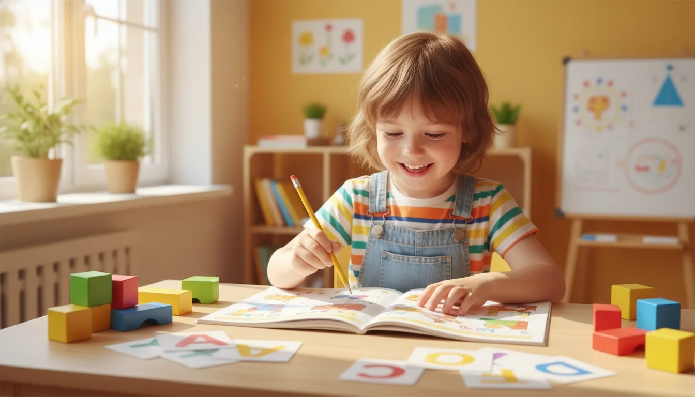

Обучаем детей и взрослых по методикам д.п.н. Васильевой Л.Л. — запатентованной системе интеллектуального развития, которая работает с 1991 года
Увеличение скорости чтения с сохранением понимания и запоминания прочитанного
Зрительная, слуховая, наглядно-образная память — тренируем комплексно
Ребёнок учится сосредотачиваться на задаче, не отвлекаться на уроках и при выполнении домашних заданий
Уже через 2 месяца родители отмечают сокращение времени на домашнюю работу
Развитие оперативности мышления, математической логики, арифметико-практического мышления
Качественное усвоение школьных предметов, устойчивый познавательный интерес и удовольствие от обучения
Повышение производительности труда, сокращение времени на работу с документами, быстрая мобилизация перед важными задачами

Даём ребёнку инструменты для успешной учёбы: обучаем быстро запоминать и структурировать информацию, эффективно читать и анализировать. Развиваем воображение, логику, концентрацию и все виды памяти.
Увеличиваем скорость чтения и качество усвоения прочитанного. Обучаем мозг систематизировать, классифицировать и группировать информацию. Результат — ребёнок усваивает материал с первого прочтения, быстрее делает домашние задания.
Тренажёр для ума: увеличиваем скорость восприятия информации, развиваем память, внимание и гибкость мышления. Результат — повышение производительности в работе и учёбе, экономия времени на обработку документов.
Используйте свободное время для укрепления интеллектуального потенциала. 30 ежедневных занятий: 60 минут для детей до 8 лет, 90 минут для школьников от 8 лет.
Записаться на интенсивБыстрый счёт в уме по системе упражнений с использованием счётов «абак». Гармоничное развитие обоих полушарий мозга, тренировка концентрации внимания, памяти, логики и скорости восприятия.
Узнать подробнееОбучение с учётом уровня и скорости каждого ученика
Продолжительность зависит от возраста и программы
Регулярность, необходимая для формирования устойчивых навыков
Познакомьтесь с методикой и оцените формат без обязательств
Школа работает по методикам доктора педагогических наук Васильевой Лидии Львовны. Первая школа была основана в 1991 году, и сегодня по этим методикам работает более 150 центров в России и за рубежом.
Это единственная запатентованная методика по скорочтению в России. В основе — адаптивные технологии, которые активизируют различные зоны мозга и формируют дополнительные нейронные связи. Обучение выстроено с учётом возрастных особенностей и уровня каждого ученика.
Методика направлена не просто на увеличение скорости чтения, а на комплексное развитие интеллекта: памяти, внимания, мышления, речи, восприятия. Упражнения включают работу со всеми функциональными блоками головного мозга.
После прохождения курса видны положительные изменения в поведении ребенка. Артём стал спокойнее, сосредоточенно выполняет домашние поручения, стал вежливее. Ребенок стал читать! До обучения при виде книг впадал в нервозное состояние.
Виден отличный прогресс в скорости чтения. Катя стала более собранной, аккуратной, появился интерес к чтению. Заметен прогресс в математике: перестала считать на пальцах, стала считать в уме. Она никогда не отказывается идти на занятия.
Моя дочь научилась читать, писать, считать. Стала интересоваться окружающим миром, научилась рассуждать. В сентябре она пойдет в первый класс и мы точно готовы к школе благодаря вашим занятиям!
Дочку научили читать, считать, писать, стала быстрее выполнять мои просьбы, собраннее стала, внимательнее. Дочери нравится заниматься, всегда ждет следующего занятия, для меня это очень важно!
Ваня научился спокойно сидеть на занятиях и выполнять задания. До этого курса он читал только слоги, а теперь читает небольшие рассказы! У него значительно улучшилась память и поведение.
Ребенок стал лучше читать, улучшился пересказ, увеличилась скорость чтения, повысилась мотивация и интерес к обучению, стала собраннее и внимательнее, улучшилась концентрация, стала быстрее учить стихи.
Дима занимался интенсивом перед 1 классом. Мы были приятно удивлены, как он лучше стал всё запоминать и слышать. Он перестал переспрашивать, слышал нас с первого раза и не забывал о домашних поручениях.
Курс очень помог Маше адаптироваться в 1 классе. Школьные домашние задания Маша делала быстро, сама справлялась. После школы она приходит радостная, потому что у нее все получается и ребенок не устает.
Артём начал заметно быстрее читать, может подробно пересказать прочитанное. По технике чтения один из лучших в классе. На занятия всегда шел с удовольствием, после занятий рассказывал о своих рекордах.
Сын закончил 3 класс на отлично! Материал усваивает значительно быстрее, стал внимательнее и собраннее! Все учителя отметили отличную успеваемость! Уже скучает по занятиям, с сентября готов продолжать!
Дарина стала очень внимательной. Классный руководитель в восторге. Уроки делает не более 1 часа, сама приходит со школы и садится за них. Появилось желание читать. На курс по рекомендации учителя записалось уже 3 девочки.
Мы пришли с трудностями чтения и удерживания внимания. Благодаря занятиям сын стал более усидчивым, собранным, научился концентрировать своё внимание и решать поставленные задачи!
Вика стала лучше учиться в школе, получает больше оценок «отлично». В домашних делах стала более аккуратной, собранной и внимательной. В будущем приведем младшего сына на курс.
В школе улучшились оценки, контрольные стал писать чаще на «5». Может пересказать тему урока, стал лучше запоминать. По чтению увеличилась скорость. Школьный учитель отмечает успехи сына.
Этот год дочь закончила гораздо лучше, чем 3 класс. Улучшились оценки, появился интерес к учебе, читает без ошибок и может пересказать, что раньше было очень сложно!
Руслан занимался с 7,5 до 10 лет. Повысилась работоспособность, усидчивость на уроках. Интерес к чтению вырос в разы. Видя результат по старшему сыну, отдали на обучение с 5 лет младшего.
Сын занимался по программе «Вундеркинд» с середины 2-го до середины 4-го класса. Обратились из-за дефицита внимания и гиперактивности. Через пару месяцев улучшилась техника чтения и понимание прочитанного. Позже улучшилась концентрация и сообразительность.
Полина сама просила записать её на курсы после пробного занятия. Из двух дополнительных занятий — танцы и курс — хотела оставить только курсы! Стала быстрее делать уроки, увереннее и взрослее.
Спустя месяц занятий скорость чтения увеличилась с 90 до 150–160 слов в минуту! У дочери улучшилось настроение, появилось чувство спокойствия, выросла уверенность и стрессоустойчивость.
Обучение подарили на День рождения — 14 лет. После вводного занятия Кира пошла в библиотеку за книгой. Чтение стало ежедневным. По запросу дочери увеличили занятия с 2-х до 3-х в неделю. Инвестировать в ребёнка — бесценно!
Сын занимается с удовольствием. На занятиях тренируют не только скорость чтения, но и память, внимание, мышление. Результатами очень довольны, повысилась скорость чтения.
Сын ходит на курс «Вундеркинд» с 6 лет, второй год. Научился читать, имеет правильную технику чтения. Стал более внимательным, подтянулся счёт, лучше стал пересказывать. Эти курсы для нас находка!
ул. Торжковская, 5, Санкт-Петербург
м. Чёрная речка
Ежедневно, 10:00–21:00
Записаться на вводное занятие{kind=link}
{kind=link}
{kind=link}
{kind=link}
{kind=link}
{kind=link}
{kind=link}
{kind=link}
{kind=link}